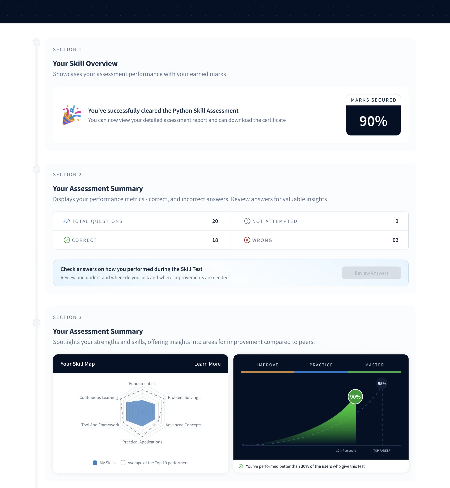
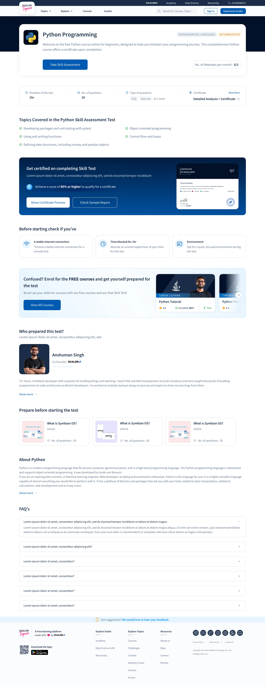
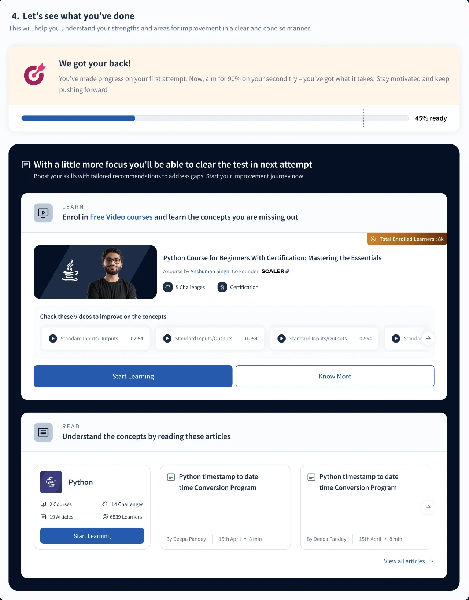
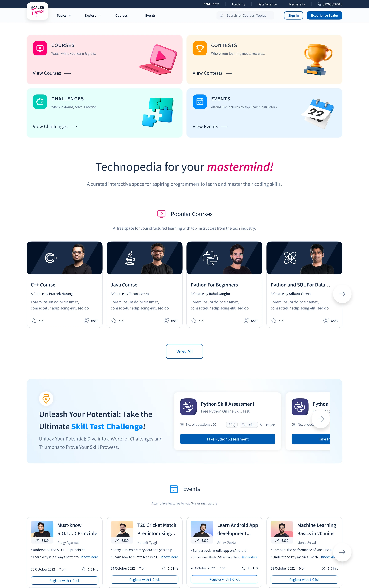
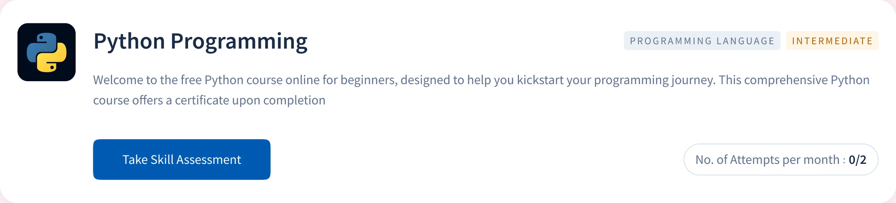
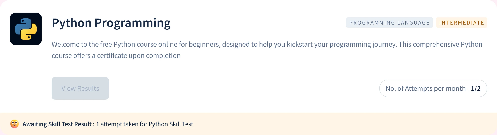
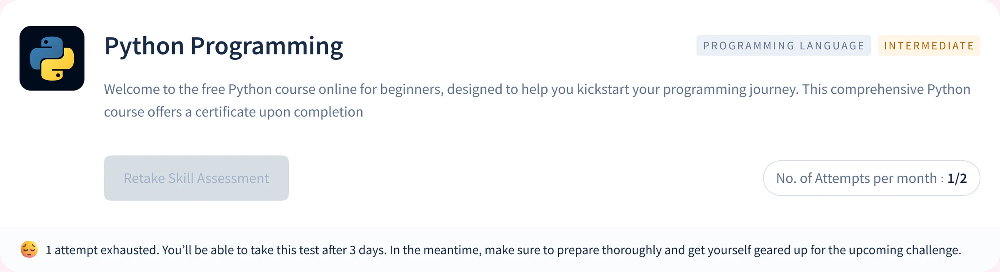
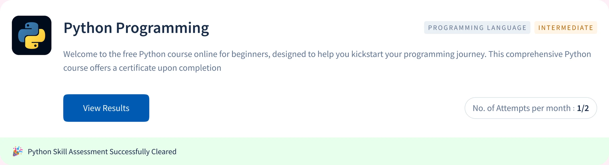

About Scaler Topics
Scaler Topics is Scaler's free layer: articles, free courses, topic hubs, tools, coding challenges, contests and masterclasses. It pulled 1.1M monthly active users in India. Most of them read something and left.
Overview
Topics had the traffic, and no way to turn a reader into someone with a reason to come back. I designed Skill Test, a timed assessment that gives a learner a diagnosis of what they actually know, then hands them the exact Scaler content that closes the gap. Twenty questions, two attempts, a 90% bar.
My role
I was the design lead, and the only designer on the project. I led the design end to end: discovery, information architecture, wireframes, visual design, prototype testing and the developer handover. It shipped in 20 days.
Team
Outcomes
46%
Of test takers opened a recommended course, about 119 of 259 in the first week
7.59%
Signup conversion through Skill Test, against a 2% platform baseline
54%
Of test takers were working professionals, against 30% platform-wide
Scaler Topics had the readers,
and no way to know them
Scaler is a technology education company running cohort-based programs for working professionals. Topics was its free layer and its biggest source of traffic. The acquisition side worked. The problem sat right after it: users landed with real intent, read an article or a course page, and nothing on the platform asked anything of them in return.
Learners
From career switchers to senior engineers, reading to find out where their skills stand.
Scaler's growth team
Needed to know who a reader was, and what they lacked, before recommending a paid program.
The same gap ran in both directions.
For the learner
Nothing to do with the platform beyond read it.
For the business
Nothing to do with the learner beyond count them.
Awareness was never the issue. 1.1M people arrived every month and 2% of them identified themselves. Nothing on the platform produced a result a user could hold, so nothing gave them a reason to sign up.
India traffic on Scaler Topics
98% never identified themselves · 1,078,000 people
2% of monthly active users
70% were not the target segment · 15,400 signups
The segment paid programs are built for
45% never became a lead · 2,970 people
55% of working-professional signups
and then
Average on fresh leads, about 25 payments a month
I led the design end to end as the only designer, with one PM and four engineers, inside the existing Scaler Topics test engine.
Twenty days,
one pass at each stage
Twenty days with a fixed assessment engine meant the sequence had to be decided up front. Nothing in this process ran twice.
I started with a validation survey, a competitive review and stakeholder interviews with product, content and engineering. I then mapped the full path from entry point to certificate, including every failure branch and state, and built low-fidelity screens for the whole flow and an interactive prototype.
Prototype sessions with 15 target users sent two areas back for another round: the scoring system and the reattempt rules. The handover covered high-fidelity screens on the Topics library, with every state specified across seven breakpoints.
Nothing on the platform
measured the person using it
Topics could describe every topic it held. It could describe nothing about the person reading them. That showed up as four gaps a reader met on an ordinary visit, whichever article or course page they landed on, and the business met again from its own side.
Four gaps created this problem
Reading produced no evidence
Ten articles on JavaScript still left a learner with no evidence of what that reading was worth.
The platform never named what was missing
Topics said what existed. A reader could see every topic on offer and still not know which one they were weakest in.
Months of study left nothing to show
No credential to put on a profile or send to a recruiter. Nothing earned on the platform was worth sharing.
A result with nothing to measure it against
Articles read became the only measure of progress, which measures nothing. Without a benchmark, a learner could not tell good from adequate.
The business met the same four gaps from its side.
Signal
Nothing signalled what a user knew, so there was no basis for recommending the right program at the right moment.
Relevance
Premium programs could only be pitched in general terms, never against a gap the user could recognise.
Conversion
The handoff from free content to a paid program ran on generic promotion.
Return
Nothing on the platform asked for a second visit, so retention and time spent per user stayed flat.
What users asked for,
in the order they asked
We surveyed Scaler Topics users before any design work started, to test whether they wanted assessment at all. The survey reached 1,200+ users and 222 responded, an 18.5% response rate. 171 of them, 77%, said they wanted to know where their skills stood.
They did want it. The order they asked for things in mattered more than the yes. Alongside the survey, I reviewed the two products a Scaler Topics user already knows, HackerRank and LinkedIn, in 2024.
What 222 respondents asked for
Ranked 01
A real performance report, with my scores broken down by topic.
Ranked 02
Show me against everyone else.
Ranked 03
Tell me what to study next, tied to what I got wrong.
Ranked 04
Something an employer respects.
What HackerRank and LinkedIn got right
Kept 01
A hard bar makes the credential worth having.
Kept 02
Every certificate needs an ID an employer can look up.
Kept 03
Capped attempts and a wait protect it.
"Users ranked the report first and the certificate last. Both products do it the other way round."
Constraints I had to work with
01
Twenty days to launch
One PM, four engineers and me. The sequence was decided up front, and no stage could run twice.
02
A fixed test engine
The timeline did not allow a new test runner. Everything the test had to communicate sat inside the existing Scaler Topics engine.
03
A 90% bar most people miss
Two attempts and a three-day wait protected the certificate. At that bar, most first attempts fail, so the failure path needed as much design as success.
Three principles behind every screen
Every outcome had to end with a next action, including the failures. Especially the failures, because at a 90% bar that is most people. I followed three principles:
Give a diagnosis before a score.
State the rules before the test.
End every outcome with a next action.
The three principles in the final design, one screen each.
The report
Principle 01, a diagnosis before a score. The skill overview opens the report, with the score beside it.

The pre-test screen
Principle 02, the rules before the test. Topics, the 90% bar, attempts and the certificate all sit above the first question.

Recommendations
Principle 03, a next action for every outcome. Each missed concept comes back with a free course or article.

Two directions I ruled out
before the final flow
A badge-first test, like the rest of the category
HackerRank and LinkedIn are built to issue a credential. Following them would have meant a score, a pass and a badge for the few who clear the bar, and very little for everyone else.
Why it failed
Respondents ranked a performance report first and the certificate last.
Why it failed
LinkedIn withholds the result below the bar. A user who fails learns nothing about why.
Why it failed
At a 90% bar, most first attempts fail. This direction gave most users a dead end.
The rules in the fine print
The prototype kept scoring and reattempt rules where most tests keep them, in the instructions. In sessions with 15 target users, those were the two places people got confused.
Why it failed
Users could not work out how the uneven scoring added up to 90%.
Why it failed
Left unexplained, the three-day lockout read as punishment.
The final flow,
piece by piece
1. One path, with the failure branch designed as carefully as success
Problem identified
A 90% bar means most first attempts do not certify. Designing only the success path would have left most users at a dead end.
What I did
I mapped one path from entry to report, then split it at the 90% bar. The branch below 90% carries the same amount of design work as the branch above it.
Information architecture / flow
A result is the midpoint, not the end.
Read each row from left to right, then follow the connector to the next row. The first three rows lead to one report; the 90% bar determines which next action the learner sees.
Scroll sideways to explore the full map.
Read the flow as steps
- Entry: A listing, language course or topic hub leads to Skill Test and its pre-test screen. Modules, attempts remaining, the 90% bar and the reward are visible before starting.
- Assessment: Twenty timed MCQ and coding questions show the learner's progress, with a way to flag questions.
- Report: After submission, the result explains topic strengths and gaps, Skill IQ and peer comparison.
- 90% and above: The learner receives a verifiable certificate and a route to the next level.
- Below 90%: Missed topics lead to mapped resources. After a three-day wait, a fresh set opens for the second and final attempt.
Original design handover / full flow
The detailed map keeps the edge cases in view.
The diagram above is the short route through Skill Test. This handover map goes wider: course and reading-track entry, the sample test, an interrupted attempt, and the routes after a result. It also contains working notes and open questions, so it should not be read as a list of features that all shipped.
Course or reading-track entry, progress, and the unlock point.
Sample test, consent, questions, submission, and an incomplete attempt.
Report, learning recommendations, retake, and certificate actions.
- Entry
- Main step
- Screen or action
- Certificate path
- Below the pass mark
- Interrupted attempt
- 1Handover note, hover to read
- AOpen question
Scroll sideways to explore the full map.
2. Discovery states the offer before the click
Problem identified
Skill Test was a new object competing with articles, courses, challenges and contests. A test runs an hour and can be failed, which makes it the highest-commitment action on the platform.
What I did
I built a listing page that leads with the value proposition, then a grid of cards naming the modules covered, with one clear CTA. Where a language has Beginner, Intermediate and Advanced levels, the card order makes mastery read as clearing each level.
The Scaler Topics home, 1440
Skill Test gets its own block, with Python Skill Assessment cards, below courses, contests, challenges and events.

3. The pre-test screen works as a contract
Problem identified
Two attempts, a three-day lockout and a 90% bar. Discovering any of that after submitting a test would read as a penalty.
What I did
Every test opens on one screen stating the modules covered, attempts remaining and the certification bar, with a certificate preview and a sample report. The reward is visible before the cost, and accepting the terms up front turns the strictness into value.
4. The assessment shows its own structure
Problem identified
The timeline did not allow a new test runner, but the engine still had to communicate the logic underneath it.
What I did
I designed inside the existing engine and kept the timer, question flagging and skip behaviour visible throughout. The weighting is deliberately uneven, so nobody reaches 90% on easy questions alone. Retakes pull fresh question IDs, so a failed attempt cannot be passed from memory.
| Difficulty | Share | Questions | Marks each | Marks total | Time each | Time total |
|---|---|---|---|---|---|---|
| Easy | 20% | 2 | 5 | 10 | 90s | 3 min |
| Medium | 60% | 6 | 10 | 60 | 300s | 30 min |
| Hard | 20% | 2 | 15 | 30 | 360s | 12 min |
| Total | 100% | 10 | 100 | 45 min |
5. The report diagnoses before it scores
Problem identified
Users asked for a performance report more often than a certificate. A single percentage tells a learner they failed, and nothing about why.
What I did
The report opens on the assessment summary, then moves into a topic-level breakdown of what went well and what did not. I introduced Skill IQ as the headline metric, because it reads as a position on a scale where a raw percentage reads as pass or fail. Answer review sits one level deeper.
6. Peer comparison gives the score a meaning
Problem identified
82% means nothing in isolation. The same score is excellent or mediocre depending on who else took the test, and Topics had no benchmark anywhere.
What I did
I placed the user's score against the cohort average and the top 10% threshold. The framing points forward, so a user above average sees the distance to the top decile. This was the second most requested feature in the survey.
7. Recommendations attach to the question that was missed
Problem identified
Generic course promotion at the end of a test is advertising, and users ignore it because it is not about them.
What I did
Every incorrect answer carries a mapped resource. Miss the hoisting question and the report points at the hoisting module, rather than a general JavaScript course. Free Topics content comes first and premium programs second, which keeps the recommendations credible.
How it stays current
The content team maintains the mapping per question in the admin panel, typed as course or article plus a URL. A user who scores 100% is pointed at adjacent tests instead.
8. The certificate is built to be checked
Problem identified
A certificate nobody can verify is a graphic. The competitive review put verification at the line between a credential and a badge.
What I did
At 90% or above, users get a generated certificate with their details, the test topic, the date and a unique ID. It is emailed, downloadable, visible on the Scaler profile and verifiable by an employer. The high bar makes it scarce enough to share, and sharing loops back to the listing page.
9. The reattempt wait becomes study time
Problem identified
A three-day lockout after a failed attempt is friction. Left unexplained it reads as punishment, and it was one of the two areas that confused users in prototype testing.
What I did
The failure state hands over weak topics and mapped resources immediately, so the three days have a job. The card shows 1 of 2 attempts used, keeps View Results active and locks the retake, with a strip that explains the three-day wait. When it ends, the user is notified by email and on the platform.
Work that went beyond
the brief
The PRD described a listing page. It never described what that page owes a user who is already halfway through the product, or how engineering would build every state without asking. Three things shipped that nobody asked for.
10. Card states that track where a user actually is
What I did
I designed the skill test card as a state machine covering the full lifecycle, from never attempted to cleared.
Why it mattered
On any given day, most users are midway through the product. Without these states, the listing page would have told returning users nothing, and returning users are what the product depends on.
Four card states at 1440, from never attempted to cleared.
Default
Never attempted. The course summary, a start CTA and 0 of 2 attempts.

Awaiting evaluation
The report is not ready. View Results stays disabled, and the strip says so.

Dropped mid-test
Leaving mid-test uses the attempt. The card says so, and says when the next one opens.

Cleared
The card switches from an invitation to an achievement, with View Results first.

11. A handover engineering could build without asking
What I did
I owned the developer handover rather than passing flat screens across. Twelve frames marked Ready for dev, every screen specified at seven breakpoints, and components on a dedicated page so cards, report modules and recommendation blocks stay consistent as the content team adds tests.
Why it mattered
Ambiguity in a handover file gets resolved by whoever is closest to the deadline, and that is rarely the right person.
Discovery, pre-test, assessment, post-submission, report, certificate.
- 360
- 720
- 1024
- 1280
- 1440
- 1920
- 2880
Card, report modules and recommendation blocks, shared by every test.
12. Feedback capture inside the flow
What I did
Question-level feedback and a feedback control on the report screen shipped with the first release. It asks how well the learner understood the question.
Why it mattered
The content team uses the responses to find questions that are unclear rather than hard, which is the only way a question bank improves after launch.
Impact after release
Product outcomes, first seven days after release
Of test takers opened a recommended course, about 119 of 259
Signup conversion through Skill Test, against a 2% platform baseline
Of test takers were working professionals, 1.8 times the platform-wide 30%
First-week volume
Test attempts in the first seven days
Page views on skill test listings, about 120 a day
Of people who opened a test's detail page went on to submit it
Test attempts a day
Attempts a day by working professionals
Test takers a day who opened a recommended course
Numbers I'll walk through on a call
Pass rate at the 90% bar
On a callRetakes after the three-day wait
On a callLeads from Skill Test
On a callCourse enrolments after a recommendation
On a callEvery rate is measured on the first week's ~259 attempts. The two signup figures cover different populations: the 2% baseline covers everyone on Topics, and 7.59% covers people who chose to open a test.
What I would do
differently next time
- Design the wait for the report. Evaluation runs asynchronously, and the post-submission screen asks learners to reload the page after a few minutes. That puts a manual step at the moment a learner has invested the most. I would design a waiting state that updates by itself when the report is ready.
- Measure past the first week. Every number on this page comes from the first seven days. I would set measures for retakes after the three-day wait, certificate shares, and enrolments from recommended courses before launch, so the diagnosis can be judged on what learners did next.